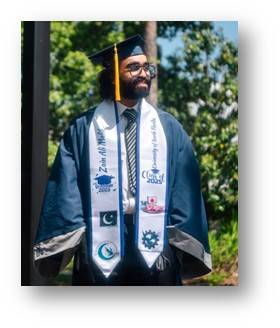
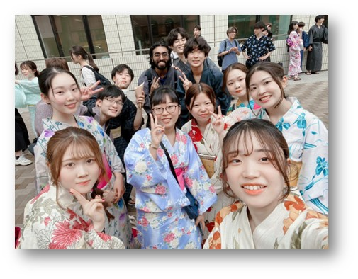
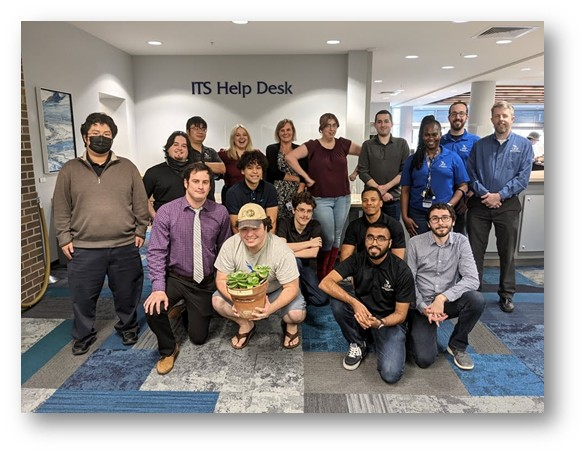
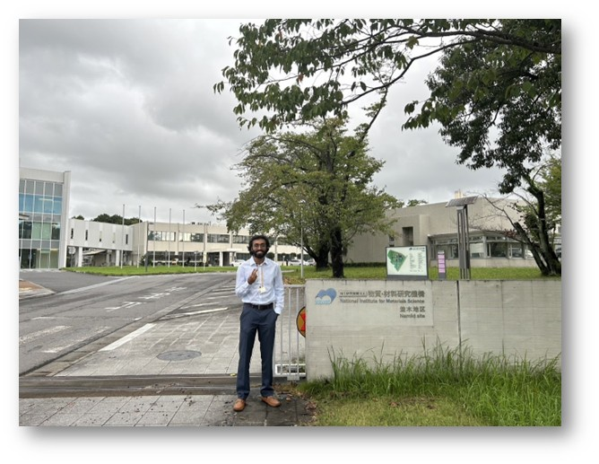
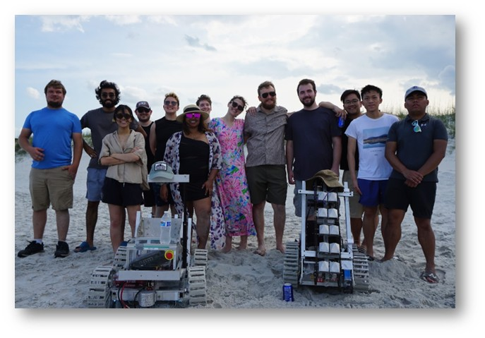
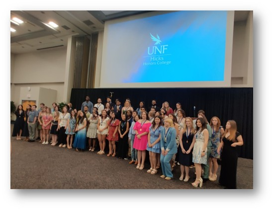

Biography
Education


- Master of Science (MSc) in Computer & Information Sciences (Accelerated Program) - Expected 2027
School of Computing, University of North Florida, United States - Bachelor of Science (BSc) in Information Science - 2025
Minor in International Business - Graduated with Honors from Hicks Honors College School of Computing, University of North Florida, United States - Exchange Semester - 2023
Faculty of Liberal Arts, Sophia University, Japan
Experience


- IT Help Desk Technician - 2021-Present
University of North Florida, Jacksonville, Florida - Resolved 50+ weekly hardware, software, and network issues for 1,000+ clients on Windows and Mac using ServiceNow, Workday, and TeamDynamix, achieving 95%+ customer satisfaction and reducing average resolution time by 30% through efficient ticket management and communication. - Mentored 10+ technicians, contributed 20+ knowledge base articles, and provided first-level IT support to 16,000+ UNF staff and students, streamlining workflows and enhancing team productivity with platform tools. - Material Informatics Intern - Summer 2024
National Institute for Materials Science, Tsukuba, Ibaraki, Japan - Assisted a Senior Researcher in developing a Researcher Knowledge Graph by transferring accumulated data into RDF representation. - Converted 30,000+ data tables into RDF triples with Python, reducing storage needs by ~82%. - Integrated 100k+ triples from OpenAlex & Wikidata APIs, improving query performance by 40%. - Utilized SPARQL to query and validate the knowledge graph, supporting efficient data retrieval and advanced analytics. - Presented project outcomes in group meetings, demonstrating strong communication and presentation skills. - Junior Web Development Intern - Summer 2022
Elyk Innovation, Jacksonville, Florida - Maintained 99.9% website uptime by performing monthly backups and updating WordPress plugins and themes, reducing security vulnerabilities. - Improved website performance and SEO by resolving technical issues and optimizing content, contributing to a 10% faster page load speed and 5% growth in organic traffic. - Information Technology Intern - 2020-2021
Emtec Inc. (Bridgenext), Jacksonville, Florida - Collaborated with DCPS Technicians to manage laptop carts, asset tracking, and device assignments, supporting efficient operations at the Tech Service Desk. - Assisted in deploying and configuring over 56,000 student laptops using Microsoft Intune, performing software checks, BIOS updates, and large-scale device maintenance across multiple schools.
Activities

- CS Senator & Social Media Officer, Osprey Robotics - 2022–2024
University of North Florida, Jacksonville, FL, United States - Represented computing students on the robotics club board and managed social media to promote robotics initiatives and engage the community. - Provided IT troubleshooting and technical support to the programming team, ensuring smooth operation of the lunar mining robot’s control systems. - Assisted mechanical and electrical teams with robot assembly and integration, contributing to cross-functional collaboration. - Helped organize project documentation and supported the team’s top 30 finish in the 2022 NASA Lunabotics Challenge, participating in live testing at Kennedy Space Center. - Assisted with efforts that showcased the robotics team’s first-place win in the outreach section of the 2024 Lunabotics competition, enhancing STEM awareness and community engagement. - Cohort Member, CCEC High Flyers - 2023-2024
University of North Florida, Jacksonville, FL, United States - The CCEC High Flyers is an exclusive leadership development program cosponsored by UNF’s Taylor Leadership Institute. - The program consists of the top CCEC students and was originally called the CCEC 10 Program. - Participants engage in the Covey 7 Habits of Highly Effective People training, a globally recognized program used by Fortune 500 companies, Olympic athletes, and technology leaders. - The first cohort's program spanned 25-30 hours over the Fall 2023 to Spring 2024 semesters. - Program activities included the Covey training, a kickoff event, two lunch and learn sessions per semester with C-suite leaders from the Greater Jacksonville area, and a closing celebration. - Public Relations Coordinator, Muslim Student Association - 2022-2023
University of North Florida, Jacksonville, FL, United States - Served as Public Relations Coordinator for the Muslim Student Association (MSA) at the University of North Florida (2022-2023). - Collaborated with officers to plan events and campaigns supporting Muslim students. - Managed social media to publicize events, share educational content, and boost engagement. - Strengthened MSA’s online presence to build community and increase outreach. - Volunteer Web Developer, Vito Research - Summer 2022
Jacksonville, FL, United States - Vito is a project created by Andreas Ink, aimed at reducing the spread of COVID-19 through the use of smartwatches that detect early signs of infection. - The project leverages wearable technology to monitor vital signs and provide early warnings, helping individuals take action before symptoms appear and potentially curbing the spread of disease. - I contributed to the Vito project by working on the website, specifically focusing on the navigation bar.
Honors & Awards

- Dean's List, School of Computing - Spring 2022-Fall 2022
- Hicks Honors College Graduate - May 2025
- Hicks Honors College Fellows Award - Fall 2024
- Student Affairs International Learning Scholarship (SAILS) - Spring 2023